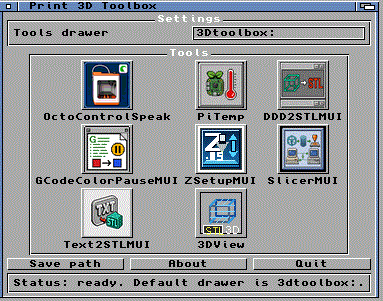

3DToolbox Amiga3DToolbox regroupe plusieurs outils Amiga autour de l'impression 3D: OctoPrint, PrusaSlicer via serveur PC, fichiers STL, G-code, pause couleur, surveillance et reglage Z. L'Amiga reste le poste de controle. Le PC ou le Raspberry Pi font seulement les taches trop modernes ou trop lourdes pour lui. Menu cliquableCliquez sur une icone de la capture pour ouvrir la page de l'outil.  Pages
Installation generale Documentation native Amiga: utilisez aussi le fichier 3DToolbox.guide. L'AmigaGuide reste la reference rapide. Ces pages HTML donnent plus de details et montrent les captures.
Projet: Denis Costils / Denis-Amiga |